ufme user manual
How to load intercompany ledgers, reconcile them, approve the results, sign off the period, and work with ufme's AI agents, with people in charge at every step.
What ufme does
Entities in a group book transactions with each other: loans, service fees, royalties, recharges and dividends. Both sides should agree, but they rarely match exactly because of FX rates, withholding tax, bank fees, timing and typing errors. ufme finds the pairs, explains the differences, and routes everything it isn't sure about to a person.
Install and start
You need Docker Desktop with about 8 GB of memory available to Docker.
git clone https://github.com/arghyachaks/ufme-platform.git cd ufme-platform cp infra/docker/.env.example infra/docker/.env # optional: keys and LLM settings docker compose -f infra/docker/docker-compose.yml up -d --build
The first build takes several minutes. When it finishes, open http://localhost:5173. A demo company with six entities (US01, UK02, DE03, IN04, SG05, BR06) is created automatically.
| Service | Address |
|---|---|
| ufme web app | http://localhost:5173 |
| API and interactive API docs | http://localhost:8000/docs |
| Sign-in service (Keycloak) | http://localhost:8081 |
ollama pull gemma4:e4b-it-qat (local and free; a GPU helps), or connect a hosted model (see Connect an LLM). Without either, ufme works normally and Assist gives standard answers.To stop ufme: docker compose -f infra/docker/docker-compose.yml stop. Your data is kept for next time.
Sign in and roles
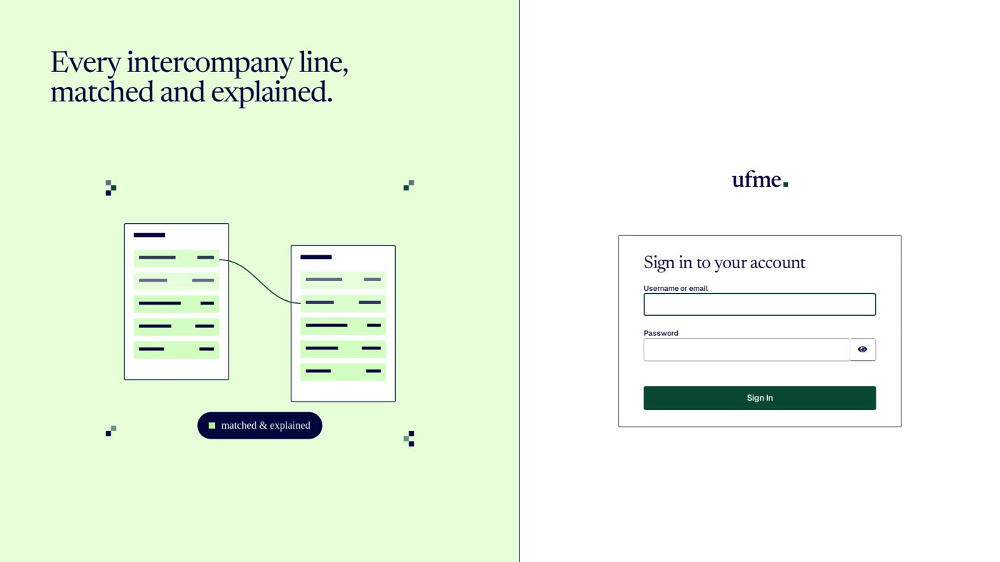
Sign in with one of the demo users. All use the local development password ufme-demo. These accounts are for trying ufme on your own computer only; replace them before any real use.
| User | Role | Entities | Typical tasks |
|---|---|---|---|
priya.nair@example.com | Analyst | US01, UK02 | Review suggestions, match by hand, work exceptions |
mei.chen@example.com | Analyst | DE03 | Same, for DE03 |
arjun.rao@example.com | Manager | IN04, SG05 | Approve matches under 50,000 USD |
daniel.ortiz@example.com | Controller | US01, UK02, DE03 | Approve up to 1M USD, register agent models, sign off |
liam.walsh@example.com | Finance Director | All | Approve above 1M (with a second approver), approve models, final sign-off |
sofia.rossi@example.com | Auditor | All | Read everything, verify the audit trail, download evidence; cannot change anything |
Finding your way
- Top navigation: Dashboard, Reconciliation, Exceptions, Cases, Rules & Policies, Intelligence, Audit & SOX. Less frequent pages (data, knowledge graph, administration, platform) are under More.
- ufme Assist (right-hand panel): ask questions about the close in plain English. See ufme Assist.
- Your name (top right): your role, and Sign out.
- Moon icon: switch between light and dark mode.
Dashboard
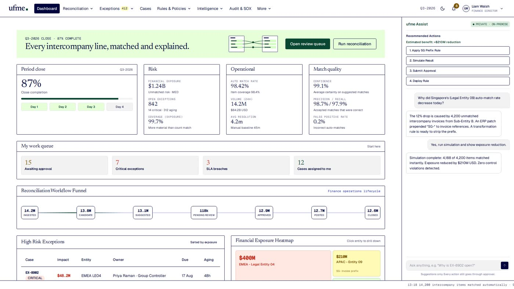
Start each day here. My work queue shows what is waiting for you: approvals, critical exceptions, SLA breaches and cases. Click Open review queue to start reviewing, or Run reconciliation to match new data.
Load data
Go to More → Data sources. Each source is a ledger feed (SAP, Oracle, NetSuite and so on).
- Sync now pulls from a connected system (in the demo it generates realistic synthetic data).
- Upload file loads a CSV export.
Try it with the sample files
The repository includes ready-made ledgers in data/samples/:
| File | Lines | Use it to |
|---|---|---|
ic_ledger_small.csv | 2,000 | A quick first run (seconds) |
ic_ledger_medium.csv | 20,000 | A realistic month across six entities |
ic_ledger_sap_headers.csv | 1,000 | See column mapping work with SAP names (BUKRS, VBUND, WRBTR ...) |
- Sign in as liam.walsh and open More → Data sources.
- On a file source card, click Upload file and choose
data/samples/ic_ledger_small.csv. - Watch the load in the table below. Click it to see accepted rows, quarantined rows (deliberate errors in the sample: missing partner, bad amount, duplicate) and data-quality issues.
- Go to Reconciliation → Runs and start a run.
Your own files need, at minimum, columns for entity, counterparty, amount, currency and date. Common names are recognised automatically (for example company_code/BUKRS, trading_partner/VBUND, amount/WRBTR, currency/WAERS, document_date/BLDAT). A reference and description improve matching.
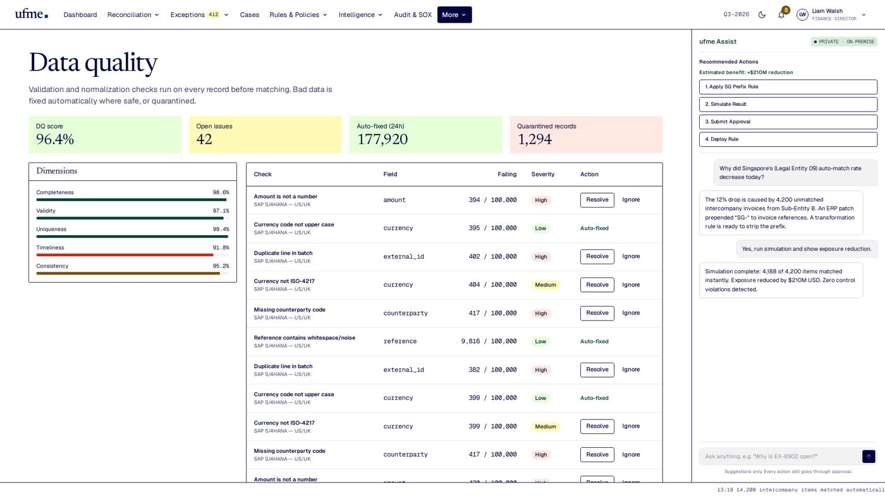
Run a reconciliation
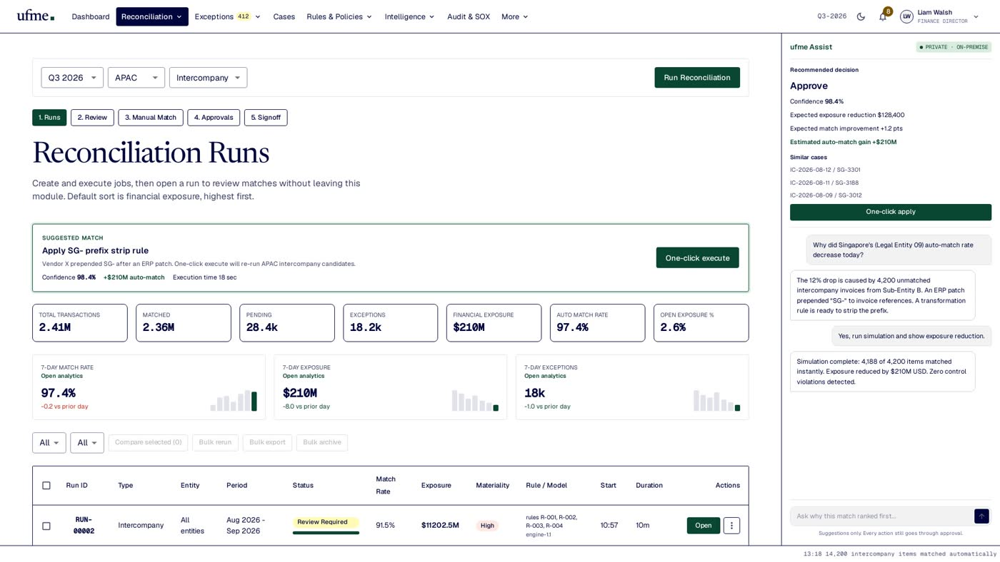
A run compares every entity pair. Each candidate pair ends in one of three places:
- Auto-matched: confidence is above the proven threshold. No action needed.
- Suggested: probably right, but a person must review it.
- Unmatched: no convincing partner; it becomes an exception or can be matched by hand.
Review suggestions
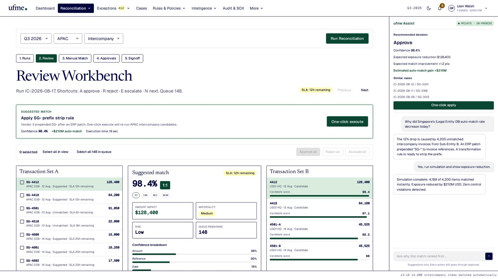
- Open Reconciliation → Review.
- Select a suggestion. Read why it differs (for example withholding tax 10%, bank fee, FX) and what decided it.
- Accept sends it for approval; Reject closes it. Add a reason; it becomes part of the audit trail and teaches the model.
Match by hand
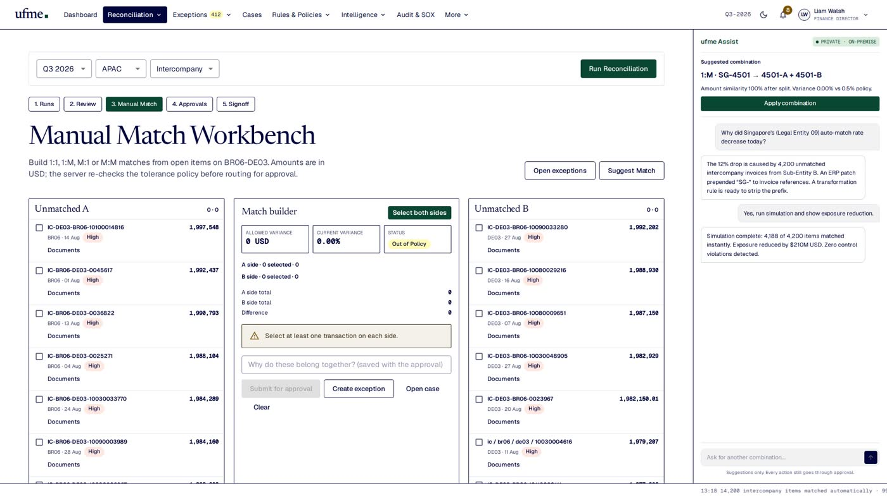
Pick one or more items on each side. ufme accepts the match if the variance is within the tolerance policy (0.5% of exposure, capped at 500 USD), then sends it for approval like any other match.
Approvals
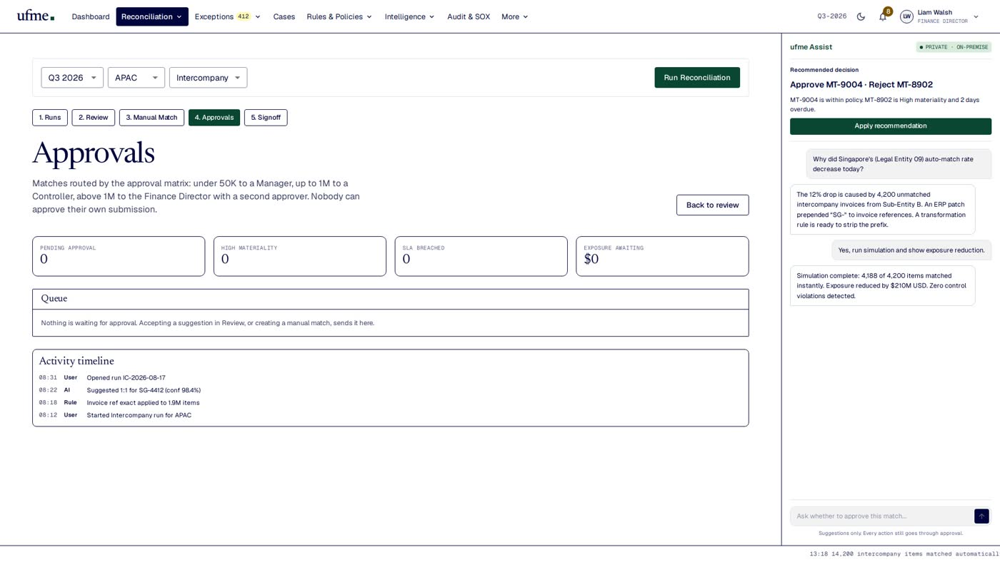
| Exposure (USD) | Who approves |
|---|---|
| Under 50,000 | Manager or above |
| 50,000 to 1,000,000 | Controller or above |
| Above 1,000,000 | Finance Director, plus a second approver (dual control) |
You can never approve something you submitted yourself (segregation of duties). You can approve, reject, or request more information.
Exceptions and cases
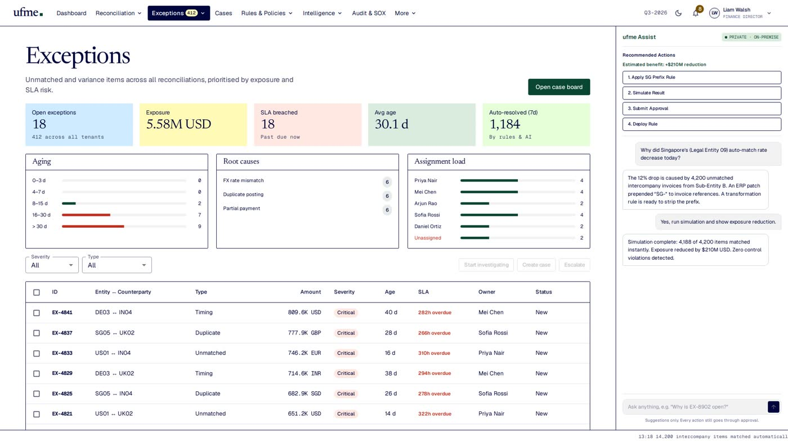
Exceptions are breaks that need work. Group related ones into a case to investigate with colleagues: assign an owner, comment, attach evidence and resolve.
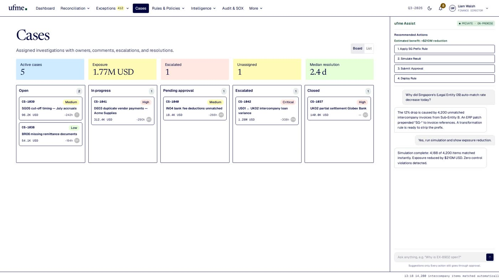
Period sign-off
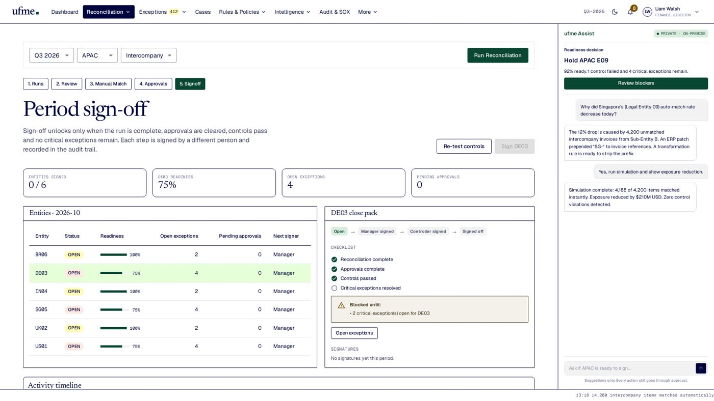
Each entity signs off the period step by step (Manager, Controller, Finance Director). Sign-off is blocked while there are pending approvals, open critical exceptions, failing controls or no completed run; ufme lists exactly what is blocking it. Each step needs a different person.
Rules and policies
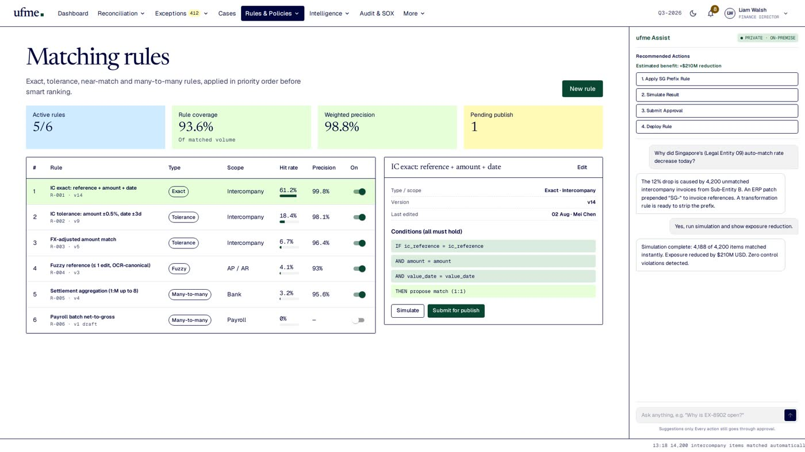
Rules describe how items are matched (exact reference, fuzzy reference, FX-aware, timing tolerance, one-to-many). Policies hold tolerances and thresholds. Changes are audited.
Explainability, models and learning
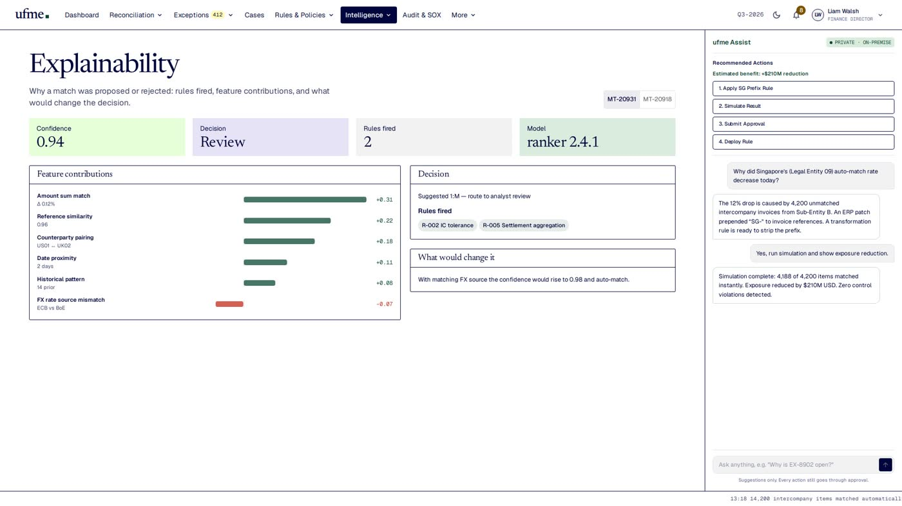
Intelligence → Models shows which scoring model is in use and the evidence for each candidate. Intelligence → Learning turns reviewer decisions into training data.
- After enough decisions, a Controller starts training from the Learning page. The new candidate must pass a promotion gate (no loss of accuracy on held-out data).
- A different Controller or Finance Director promotes it (four eyes).
- If results look wrong, Roll back returns to the previous model instantly. Drift monitoring warns when today's data no longer looks like the training data.
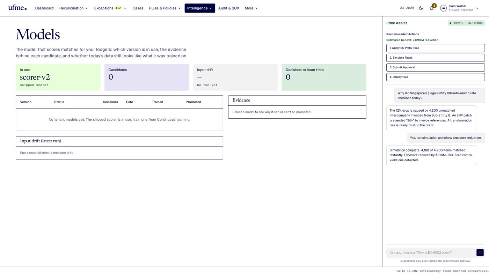
Audit and SOX
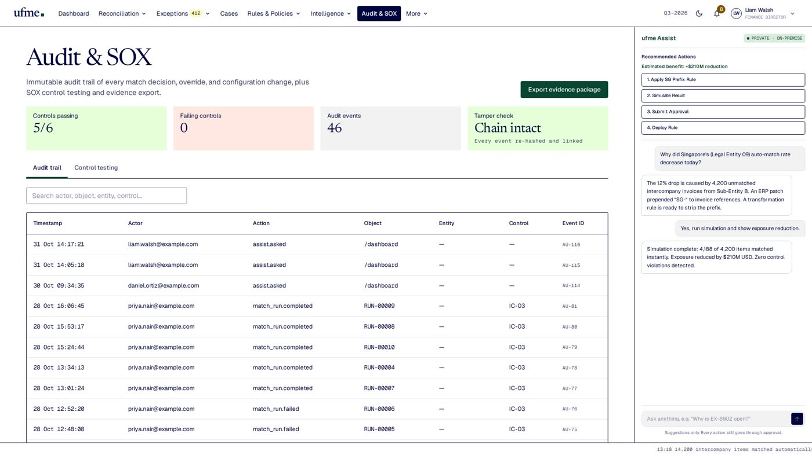
- Every action is recorded in a hash-chained audit trail. The Audit page checks the chain each time it opens and shows whether anything was altered or removed.
- Export evidence package downloads a signed ZIP of the trail and control results for your auditor.
- SOX controls (approval authority, dual control, segregation of duties, reconciliation complete) are computed from the data, not ticked by hand.
ufme Assist
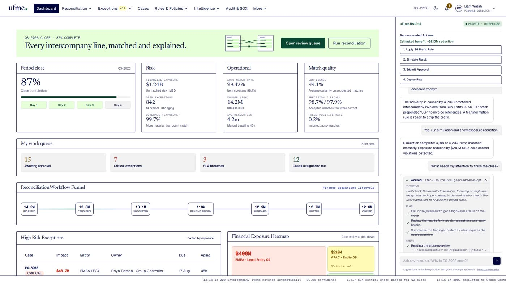
Type a question in the right-hand panel, for example "What needs my attention to finish the close?" or "Why is EX-8902 open?".
- While it works, the Working section shows its thinking, its plan (ticking off as it goes) and each lookup with its result. When the answer arrives it folds into one line; click it to see everything again.
- Assist only reads, and only within your entities. It cannot approve, post or change anything.
- Follow-up questions remember the conversation. New conversation (under the box) starts fresh. The stop button ends a run.
- The chip at the top shows PRIVATE · ON-PREMISE when the local model is running.
Recon Investigator
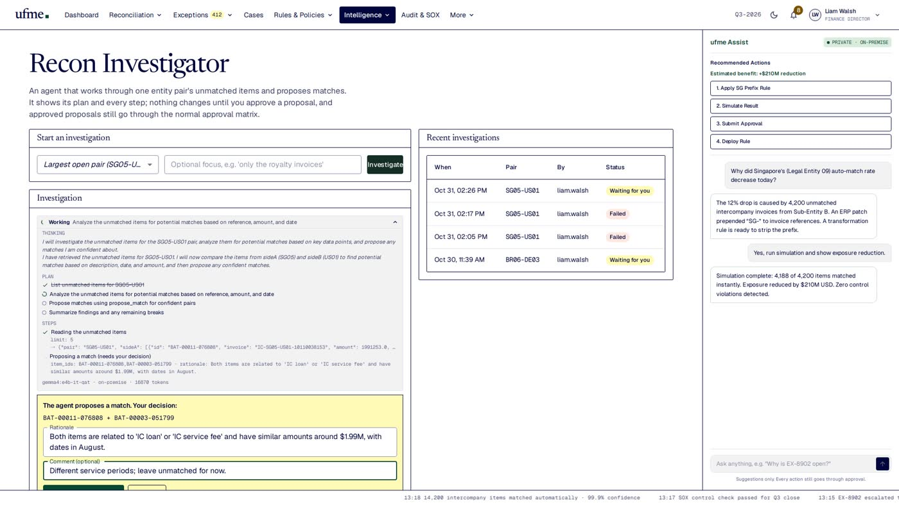
- Open Intelligence → Recon Investigator.
- Choose an entity pair (or keep the largest open pair) and optionally a focus, then click Investigate.
- Watch it read the unmatched items and plan. When it proposes a match, it stops and waits for you.
- Review the items and rationale. Choose Approve and submit, edit the rationale and approve, or Reject with a comment. The agent then continues from where it stopped.
- An approved proposal becomes a manual match, which still needs the approver your approval matrix requires.
Agent operations
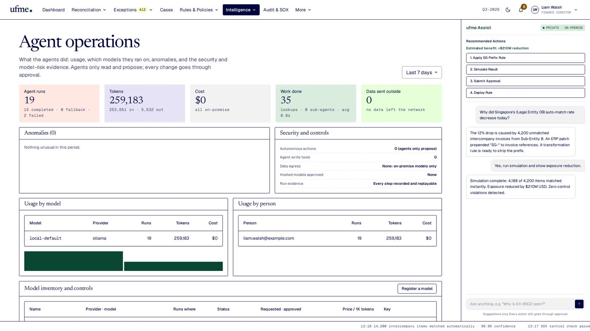
Intelligence → Agent operations is the control room for every agent. Controllers, Finance Directors and Auditors see all runs; others see their own.
- Usage by model and by person, with tokens and cost.
- Anomalies: failure spikes, unusual token use, data sent to hosted models, unregistered models, off-hours use.
- Security and controls: autonomous actions (always 0), agent write tools (0), data egress, approved hosted models.
- Model inventory: every model, where it runs, who requested and approved it, and which agent uses it.
- Recent runs: click any run to replay exactly what the agent saw, did and proposed.
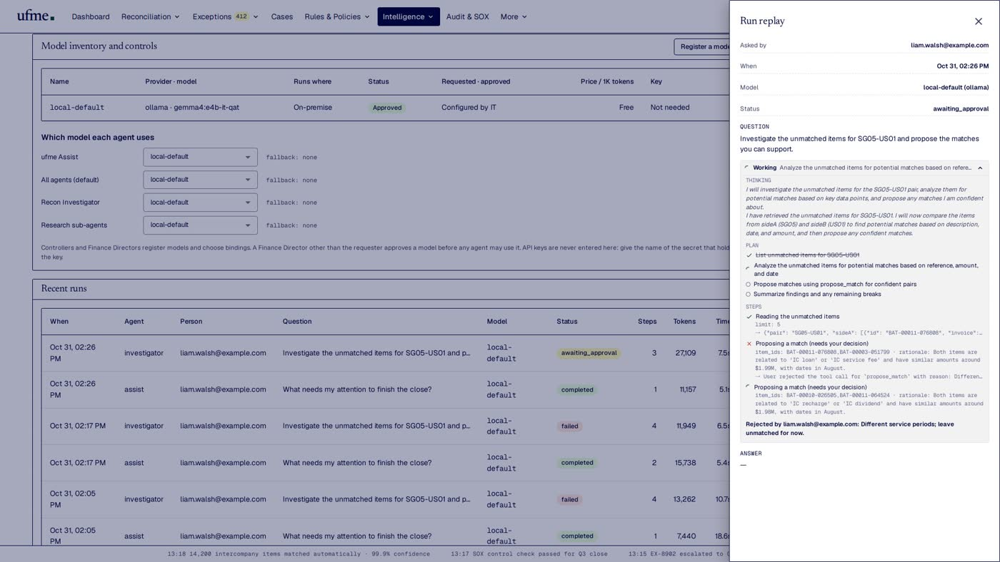
Connect an LLM
Agents use the local Ollama model unless you choose another. There are two ways to add a model.
In the app (recommended)
- A Controller opens Agent operations → Model inventory and controls → Register a model.
- Choose the provider (OpenAI, Azure OpenAI, Anthropic, Google Gemini, Bedrock, Vertex, Mistral, Ollama or an OpenAI-compatible server), the model id, and the name of the secret that holds the API key. Never type the key itself.
- A different person, a Finance Director, approves it. Hosted models send questions and looked-up data to the provider, so this is a deliberate decision.
- Under Which model each agent uses, pick the model per agent. The local model stays as the fallback.
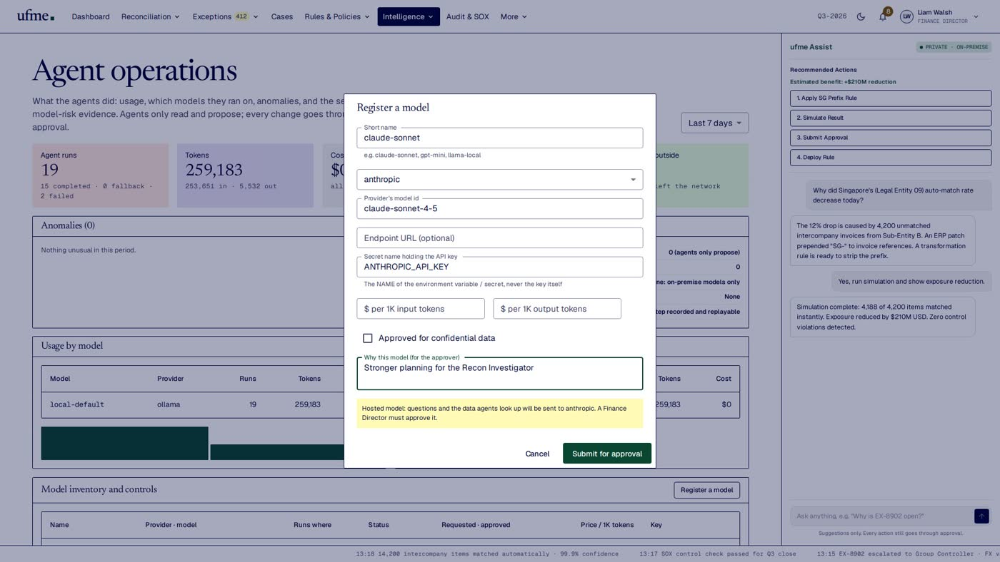
The API key
Put keys in infra/docker/.env (start from .env.example; it is never committed), for example ANTHROPIC_API_KEY=..., then restart with docker compose -f infra/docker/docker-compose.yml up -d.
By configuration
Administrators can also declare models and bindings in .env with AGENT_MODELS and AGENT_BINDINGS; see the README section "Connect an LLM" for one-line examples per provider.
Troubleshooting
| Problem | What to do |
|---|---|
| The page doesn't load | Wait for the first build to finish; check Docker Desktop is running and docker compose -f infra/docker/docker-compose.yml ps shows the services up. |
| Sign-in fails or loops | Use http://localhost:5173 (not 127.0.0.1); check the sign-in service at http://localhost:8081 is up. |
| "You aren't assigned to ..." | You are outside your entity scope. Sign in as a user who covers that entity. |
| You can't approve | The exposure needs a higher role, or you submitted it yourself (segregation of duties). |
| Assist says STANDARD ANSWERS | No model is reachable. Start Ollama (ollama serve) and pull the model, or connect a hosted one. |
| A hosted model isn't used | It must be approved, bound to the agent, and its API key present in .env. Agent operations shows "Key: Missing" if not. |
| Upload rejected | Check the file has entity, counterparty, amount, currency and date columns. Open the load to see which columns were found. |
Glossary
| Entity pair | Two group companies that trade with each other, for example DE03-IN04. |
| Exposure | The larger side of a match in USD; drives which role must approve. |
| Residual | The difference left between the two sides. |
| Dual control | Two different approvers, required above 1M USD. |
| Four eyes | A change proposed by one person and approved by another. |
| Agent | An AI assistant that plans and uses read-only tools; it can only propose. |
| Run replay | The recorded, step-by-step history of an agent run. |
ufme is open source under the Apache 2.0 licence. Created by Arghya Chakraborty.